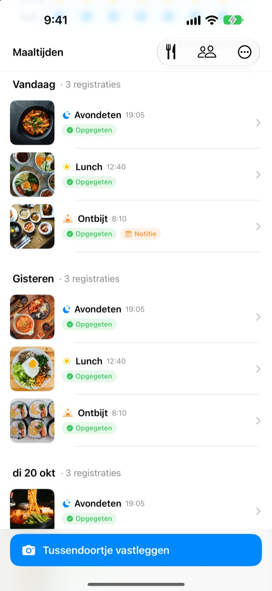
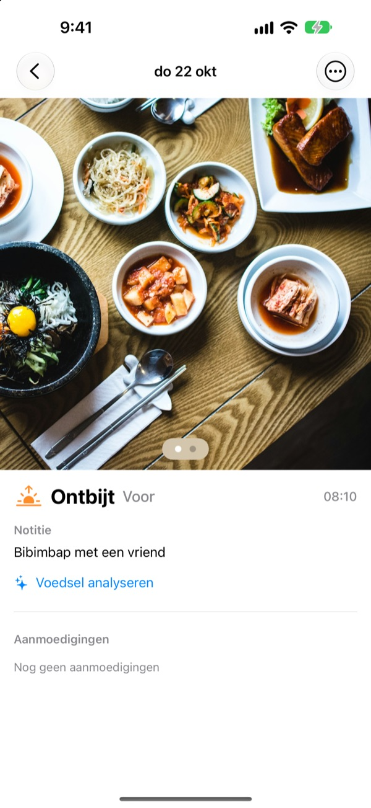
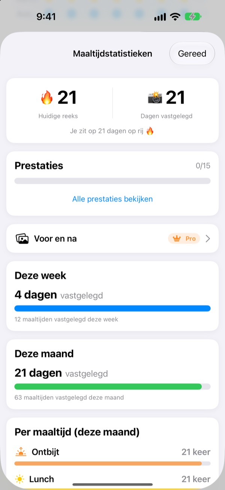
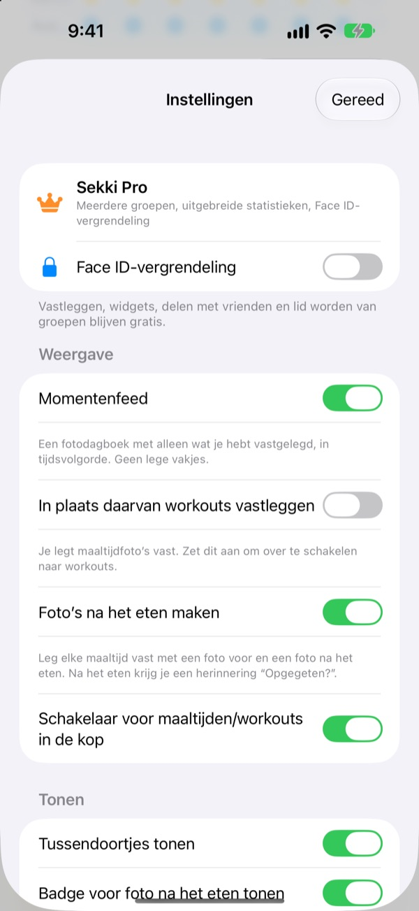

Eén foto voor het eten.
En het staat erin.
Sekki kijkt wanneer de foto is gemaakt en zet hem bij ontbijt, lunch, avondeten of een tussendoortje. Leg maar één maaltijd per dag vast en je reeks loopt door.
Vastleggen, statistieken, widgets en delen met vrienden zijn gratis.

Probeer het zelf
Kies een tijd en tik op de vastlegknop. Net als in de app staat de maaltijd voor die tijd al op de knop.
Ooit na drie dagen gestopt met een eetdagboek?
Je slaat een ontbijt over, vergeet een avondeten, en de lege vakjes gaan zo irriteren dat je de app verwijdert. Sekki heeft geen lege vakjes. Alleen de maaltijden die je vastlegt stapelen zich op volgorde op, en één foto is genoeg om de dag te laten tellen.
Foto maken, maaltijd staat goed
Op basis van het tijdstip zet Sekki de foto bij ontbijt, lunch, avondeten of een tussendoortje. Voeg foto's van voor en na toe, leg vast zonder foto of schrijf een notitie.
Eten wordt gratis op het toestel herkend, en je foto's verlaten nooit je telefoon.

Een dagboek dat nooit krimpt
Eén maaltijd per dag houdt je reeks in stand, en het totaal aantal vastgelegde dagen gaat nooit omlaag. Week- en maandstatistieken tonen hoeveel dagen en maaltijden je hebt vastgelegd, geen percentage.
Onderweg verzamel je prestaties als 7 dagen op rij en Vroege vogel.

Alleen de maaltijden die jij kiest, zonder de app te openen
Kies voor welke maaltijden je herinneringen wilt en stem de tijden af op je dag. Na de foto van vooraf tik je direct in de melding op Opgegeten.
Leg ook vast met de Actieknop, Siri, Opdrachten of een widget, en voeg vrienden toe met een code om elkaar aan te moedigen met emoji en reacties.

In drie stappen aan de slag
- 1
Kies je maaltijden
De eerste keer vraagt Sekki aan welke maaltijden je herinnerd wilt worden. Aan te passen in Instellingen.
- 2
Eén foto voor het eten
De vastlegknop toont al de maaltijd van dit moment. Tikken, foto maken, klaar.
- 3
Op? Eén tik
Tik op Opgegeten in de melding of widget, of voeg een foto van na toe.
Vastleggen zonder de app te openen
- Melding
- Na de foto van vooraf tik je direct op Opgegeten in de melding
- Beginschermwidget
- Zie het aantal van vandaag en de maaltijd die nu loopt, en tik op Opgegeten
- Toegangsschermwidgets
- Rechthoekig, rond en op één regel
- Actieknop · Siri · Opdrachten
- Opgegeten vastleggen met één druk of één zin
- Bewaren in Foto's
- Zet het aan in Instellingen voor aparte Sekki-albums voor maaltijden en workouts
- Workoutmodus
- Workouts staan los van maaltijden, met het aantal van deze maand in één oogopslag
De knop Opgegeten in de widget vereist iOS 17 of nieuwer.
Vastleggen is gratis. Sekki Pro gaat dieper.
Gratis
- Fotologboek met automatische indeling, foto's van voor en na, notities
- Reeksen, totaal aantal dagen, week- en maandstatistieken, prestaties
- Herinneringen voor gekozen maaltijden, Opgegeten zonder de app te openen
- Widgets, Actieknop, Siri en Opdrachten
- Maaltijden en workouts delen met vrienden, emoji en reacties
- Eén groep maken, aan zoveel groepen meedoen als je wilt
- Etensherkenning op het toestel
Sekki Pro
- Meerdere groepen voor familie, werk of je sportclub
- Maaltijden van een paar weken terug naast die van nu vergelijken
- Zien wat je het vaakst eet
- De app vergrendelen met Face ID of Touch ID
Jaar- of maandabonnement, of eenmalige aankoop voor altijd
Het abonnement wordt automatisch verlengd, tenzij je het minstens 24 uur voor het einde van de periode opzegt. Opzeggen kan altijd via Instellingen > Apple Account > Abonnementen. Servicevoorwaarden: m1zz.github.io/RoutineCamera/nl/terms.html
Veelgestelde vragen
Waar worden mijn foto's bewaard?
Op je toestel. Zet je Automatisch bewaren in Foto's aan in Instellingen, dan komen ze ook in de Sekki-albums in Foto's. Zolang Mijn maaltijden delen aan staat (dat staat het standaard), worden ze naar iCloud geüpload zodat vrienden die je hebt toegevoegd ze kunnen zien. Uitzetten kan via Instellingen > Account en delen.
Hoe voeg ik vrienden toe?
Deel op het scherm Vrienden je code van zes tekens en voer de code van je vriend in. Je kunt meerdere codes tegelijk plakken, gescheiden door komma's.
Hoe moedig ik een vriend aan?
Open een maaltijd van je vriend en laat een emoji of korte reactie achter. Heeft je vriend nog niets vastgelegd, tik dan op het lege vakje voor een zacht porretje.
Ben ik mijn reeks kwijt als ik een maaltijd oversla?
Nee. Leg die dag welke maaltijd dan ook vast, tussendoortjes inbegrepen, en je reeks loopt door. Zelfs als je een hele dag overslaat, gaat het totaal aantal vastgelegde dagen niet omlaag.
Ik krijg geen meldingen.
Controleer in iOS-instellingen > Berichtgeving of meldingen van Sekki zijn toegestaan en of het toestel bij iCloud is ingelogd. De herinneringstijden pas je aan in de instellingen van de app.
Stuurt de etensherkenning mijn foto's naar een server?
Nee. Het gebeurt op je toestel, dus je foto's verlaten nooit je telefoon. Gratis en zonder limiet.
Hoe verwijder ik mijn account en gegevens?
Ga naar Vrienden > Account > Account verwijderen. Je account en de maaltijdgegevens op de server worden verwijderd en zijn niet terug te halen. Gaat er iets mis, mail ons dan.
Hoe zeg ik mijn abonnement op?
Via Instellingen > Apple Account > Abonnementen. Het wordt automatisch verlengd, tenzij je minstens 24 uur voor het einde van de periode opzegt. De aankoop voor altijd betaal je één keer.
Bugs, ideeën of vragen over je account: mail naar leeo@kakao.com of stuur een DM naar @lee25_ios op Instagram. We reageren meestal binnen een à twee dagen.